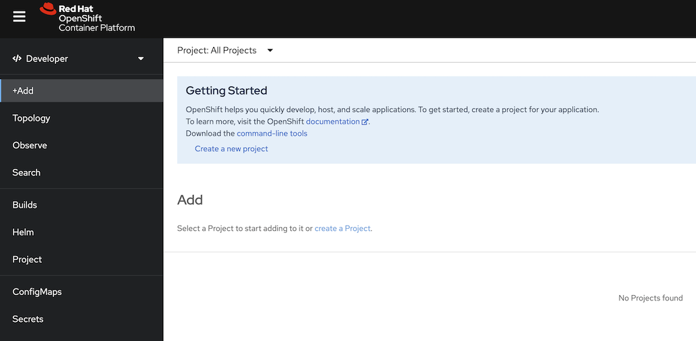
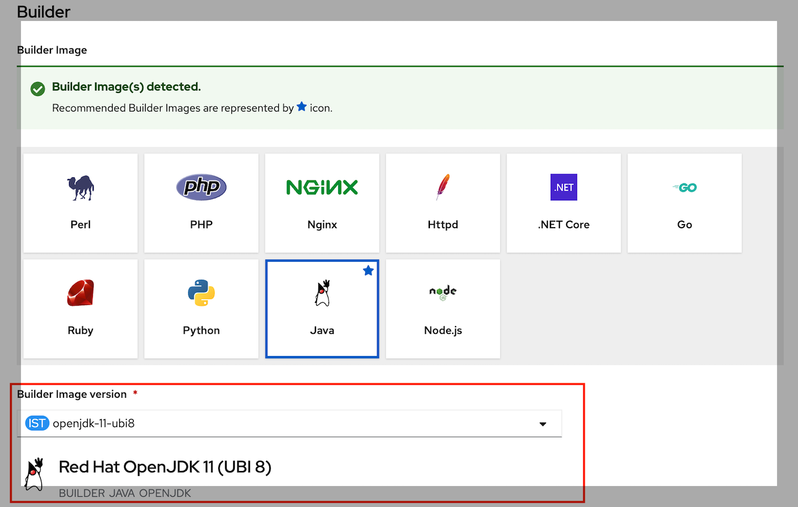
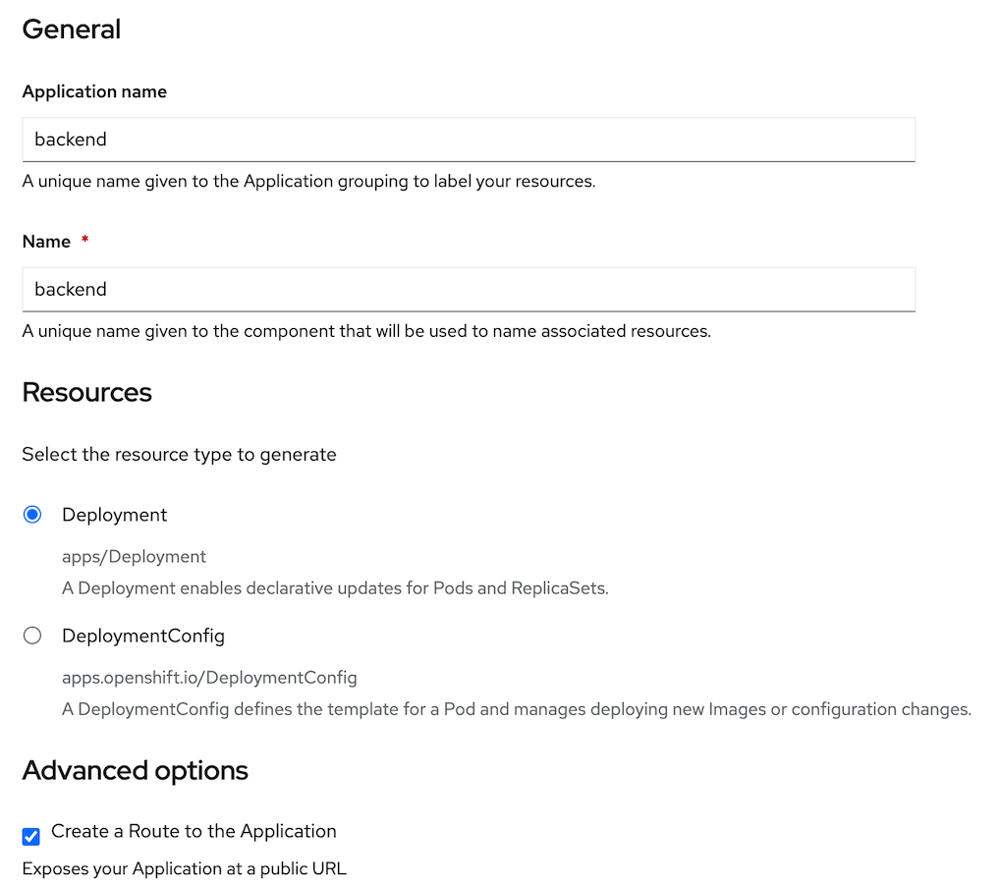
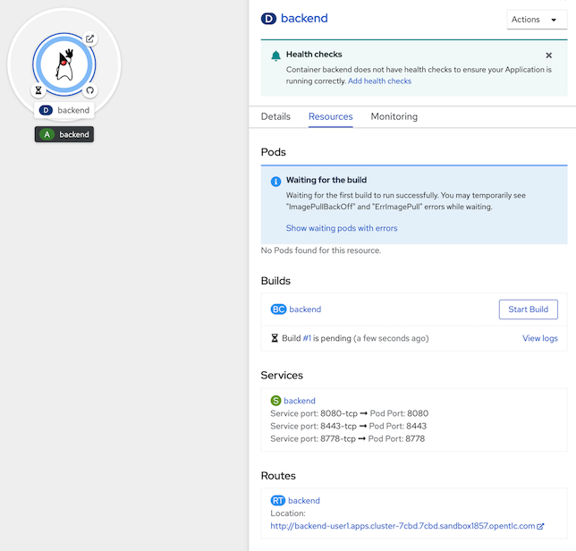
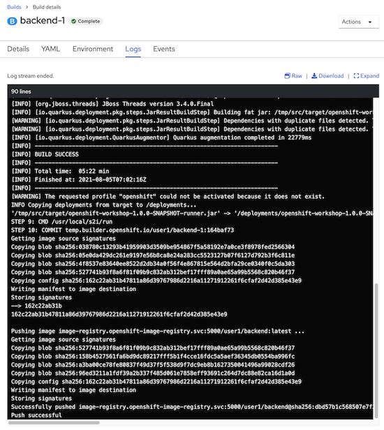

Deploy application (quarkus) to openshift with s2i
Openshift Project
- open browser to https://console-openshift-console.apps.xxx.opentlc.com
- confirm URL from instructor
- login to openshift with your username/password
- username: 'userx'
- password: openshift
- select Developer Perspective from left menu (if openshift don't default page for you) 
- default project is your name. such as 'user1', 'user2'
- if login first time, dev console will launch developer quick tour, click Skip tour
- if deveveloper console not default your project, click Project name 'PR userx' in topology or select from Project Dropdownlist

- Optional: How to Create Project (Don't create project in this workshop, we prepare project for you now!)
- create project with your username such as 'user1'
- go to dropdown at Project: All Projects
- click Create Project
- set Name*= 'userx', Display Name = 'userx', Description = 'userx workshop' (Please use your username to Project name!!!)

- click create, openshift console will change page to new project
- create project with your username such as 'user1'
Deploy Application to Openshift with OpenShift Developer Console (S2I)
- click +Add menu in left pane
- select Import from Git
- in Import from Git page, input Git Repo URL with 'https://github.com/chatapazar/openshift-workshop.git'
wait until Openshift validate URL complete (page will show validated complete icon)
Optional: Not required for this lab!
you can input additional information for get source code such as
- Git Reference: for branch, tag, or commit. (default s2i will checkout from default branch such as main or master)
- Context dir: in case source code don't place in root of git such as /code
- Source Secret: provide user/password for private repository

- OpenShift S2I will automatic select Builder Image from your source code, in case s2i can't detect base image. you can manual select.
- developer can select builder image version from dropdown list such as java application can select base image for jdk8 or jdk11
- click 'Edit Import Strategy'
- for this workshop, Please select 'openjdk-11-ubi8' or Red Hat OpenJDK 11 (UBI 8) (default is openjdk-17-ubi8, it's new jdk version. it don't match with simple code in this demo! :D ) 
- next, in general section set
- Application name: backend
- Name: backend
- Resources: select Deployment (deployment for standard Kubernetes, DeploymentConfig is deployment with extension feature from OpenShift)
- Advanced Options: checked Create a Route to the Application 
- before click create, in advanced option
- click 'Labels' link
- add label 'app=backend'

- click 'Resource limits' link
- set CPU Request: 100 millicores
- set CPU Limit: 200 millicores
- set Memory Request: 256 Mi
- set Memory Limit: 512 Mi
- Click Create, Console will back to Topology Page
- Click at Duke icon, Dev Console will show Deployment information 
- in build section, OpenShift Build is creating image with S2I
- click View logs at Build #1
- wait until build complete, see build backend-1 change from running to complete (3-5 minutes) 
- after build complete, openshift will take the image from the build to deploy and create a pod as shown in the picture.
- wait until Pod 'backend-xxxx-xxx' change status to Running

- click View logs, check application start complete (wait until logging show message 'Installed features: ....')
- click Topology in left pane, at duke icon, you will see Open URL link, click it to open browser to this application in new tab
- Or Click Location from Routes 'backend' in 'backend' Deployment information

- Example of backend application landing page
- Deployment Done!
Test Rest API of Backend Application
- click '>_' icon in top of Openshift Web Console to open Web Terminal

- First Time, Web Terminal will ask you for project to initialze terminal, please select your project such as user1, click start
- wait until terminal start complete, command prompt will show in command line terminal
- Next time, you can press from the icon '>_' immediately without creating a new one.
- in command line terminal, check current project by below command
example of outputoc projectUsing project "user1" from context named "user1-context" on server "https://172.30.0.1:443". - if current project is not your project (such as result is not 'Using project "user1"'), use below command to set current project to command line context, change "user1" in command to your project name.
oc project user1 - test call backend service api (REST)
example of resultcurl https://$(oc get route backend -o jsonpath='{.spec.host}')/backendBackend version:v1, Response:200, Host:backend-7b5c56fc8c-t57wl, Status:200, Message: Hello, World- remark: Host name in result of this api is name of Pod, please check and verify it!
- if done!, You are ready for the next step.
Next Step
- Basic Openshift Topology